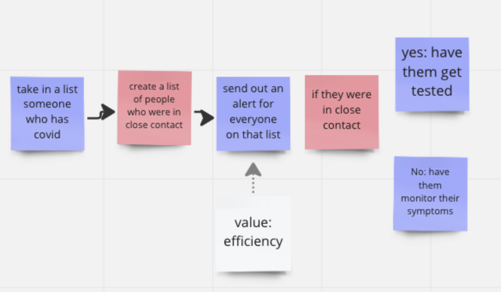

Problem Formulation#
Learning outcomes#
Construct a computational problem formulation for an English problem statement
Analyze problem formulations in terms of their values
What is problem formulation and why should we care about it?#
Remember the overarching division between “solving problems” (computational thinking) and “coding” (giving instructions to the computer in Python) that we talked about before?
A BIG part of computational thinking is problem formulation.
To do real-world programming, you need to know more than how to write code. You need to be able to take a relatively vague problem like “get all the email addresses out of this file”, and model the problem so that it can be solved by a computer.
An example#
Let’s walk through an example together of what this looks like.
Here’s a vague problem statement: I get so many emails, and i have a blocklist of usernames that i don’t want to see. so, please filter all the emails that come in everyday, so i don’t see the emails from the blocked usernames
And here is a draft problem formulation:
{kind=link}
Notice how this formulation specifies in much more detail the (sub)operations, data, and logical relationships between the operations/data.
More on why problem formulation matters#
If you don’t learn this skill (and it is a skill!) in this class, you will struggle in future programming courses (e.g., INST326) and any other area where you’re actually needing to use programming to solve information science problems.
To give a flavor of this, consider this note I got from an INST326 instructor on what students were really struggling with in her class:
“They are struggling with programming in general. Even though this is their second course, they don’t have much ability to think about how to solve problems. We’re in the “I watched everything you did and followed but have absolutely no idea where to start” phase, even with very simple work. I suspect they are sneaking through 126 without learning what they need and suddenly have to create from scratch with me and are panicked”
To emphasize: If you can’t formulate a problem in computational terms, it doesn’t matter whether you know how to write a legal conditional statement, or how to assign variables, and so on. You’ll know how to instruct the computer, but not what instructions to give it! The what comes from problem formulation. It’s absolutely critical!
When/how to do problem formulation?#
You should be able to think through these bits without knowing how to write the code for it!
In fact, it’s a really good idea to get started on this before you write any code. Your problem formulation doesn’t have to be perfect or complete, and you will refine it as you go, but it will guide what you write, and help you think through your debugging and help-seeking as well (recall how it’s useful to have a navigator and driver in paired programming: the problem formulation representation can help be a passive navigator resource)
This is why we have your first deliverable for Project 2 be a problem formulation.
Anatomy of a problem formulation#
Let’s go back to our running example. What are the parts of the problem formulation?
I find it useful to think about a problem formulation as specifying three sets of things:
The key steps/operations of your program
The data that is going in and out of the steps/operations
The logical flow of how all the pieces fit together
Here is our example again:
In this example, the key elements were:
Operations: extract email address from email record, extract username from email, add email to filtered emails list if the username isn’t in the blocked username list
Data: raw email list, filtered emails, etc.
Logic: loop over every raw email, conditional for the adding operation, sequence between the operations.
In this class we will use a simple diagramming convention of red post-its for operations, blue post-its for data, and orange/yellow for logical relationships. This is a very simplified convention to get at these key ideas around problem formulation. In professional practice, there are a number of different diagram types and practices (often involving a whiteboard), such as UML diagrams and other conventions/diagrams.
Here is another simple example: I’m going to give you a list of numbers, and I want you to give me back a list that only has odd numbers in it:
What are the main substeps/operations in this problem?
What data is going in/out of the operations?
What is the logical flow of how they fit together?
Here’s an example problem formulation for that:
{kind=link}
Notice how it is possible to formulate it to think about substeps/operations that we know how to do already (check if number is odd)! This is a key heuristic for a good problem formulation.
Now let’s look at slightly more complex example that we definitely don’t know how to code yet. I’m going to give you a bunch of birth certificates (N=500,000), and I want you to tell me what the top 50 and top 10 baby names are, because I want to choose names that are recognizable (i.e., in the top 50), but not too common (top 10):
What are the main substeps/operations in this problem?
What data is going in/out of the operations?
What is the logical flow of how they fit together?
Here’s an example problem formulation for that:
{kind=link}
Let’s practice!#
I’m going to give you a list of emails (for people coming into our Zoom room), and I want you to give me back a list that only has emails from @umd.edu:
What are the main substeps/operations in this problem?
What data is going in/out of the operations?
What is the logical flow of how they fit together?
What makes for a good problem formulation?#
IME problem formulation is more of an art.
Here are some heuristics I look out for:
Detailed enough that you start to be able to map them to functions or bits of code that you know how to write. This makes it easier to write good functions you can reuse, which translates to less copy/pasting/redundancy and bugs.
Allows you to write and test parts of your problem in isolation from others.
More helpful Google / Stack Overflow search results
I also look for these affective/emotional/high-level senses:
I feel like I can see the logical “structure” of my program.
The problem feels more managable: I recognize pieces I know how to tackle, and the ones I don’t are specific in ways that makes it easier to learn / seek help
Beyond the “purely technical” for problem formulation#
So problem formulation can make things “easier” (and probably results in a “better” overall program that solves the problem).
But good problem formulation should consider more than just the “purely technical”. Understanding this is a crucial part of being a professional information scientist and programmer.
Examples to gain some intuition#
Data validation for form#
Let’s consider an example: a form for data entry for payment. Needs to account for possible data entry errors.
There are many ways to define what counts as a valid name. One way is to assume a certain heuristic about name length (no more and no less than a certain length).
Like this:
{kind=link}
This is how many real-world systems are actually set up. And it works a lot of the time! But falls short in other ways. I’ve actually experienced this personally! My “first name” (which includes my Chinese given name “Chu Sern”, and my English given name, “Joel”, is too lnog for many government data entry forms!).
What’s missing here potentially is a value of inclusion that may lead to potentially quite different “red” operations that test for a name’s validity, or potentially even new “blue” data structures that allow for variations and orders other than “first name”, “last name”, “middle name” (e.g., “family name”, “given name”, as in some cultures).
Contact tracing system#
Let’s consider another problem: a contact tracing system for UMD students.
Here, you can have quite different valid problem formulations, that vary systematically as a function of what values are salient (e.g., efficiency, cost, accuracy, inclusion).
Here’s a basic version that focuses on accuracy.
{kind=link}
Here’s another version that focuses on efficiency (note the “red” operation that emphasizes alerting for faster messaging times)
{kind=link}
Here’s another version that focuses on inclusion (note the additional “red” and “blue” bits that emphasize provision of free testing, recognizing that there is unequal accesss to testing)
{kind=link}
You can imagine yet more variations, such as a version that scans a qr code to report any case of covid-19 for anonymity reasons (if privacy is a core value)
The role of values in problem formulation (and programming)#
I want you to notice how values shaped what happened in the problem formulation.
Values are not the same as “features” (i.e., parts of a system). Values determine the shape of the problem formulation. They determine what we leave out or include, and how we specify it. So, at the end of the day, values ultimately shape what gets built (or not).
You can think of values as higher- or deeper-level constraints and conceptions of what is Good. Examples: efficiency, cost-saving, performance, privacy, security, harm-reduction, equity.
A key idea is that problem formulation involves values, whether you notice them or not. This will come up in more or less mundane settings, from data analysis (what counts as “extreme values”, what does “clean data” mean, what is in/out of the dataset), to visualization (do you encode as an explicit step a way to make the visualization accessible?).
Sometimes not recognizing that these values are shaping your design decisions can lead to very different problem formulations, but also unintended consequences and harm for people whose values were not represented in your problem formulation, as we saw. Sometimes a value isn’t so much missing altogether as deprioritized heavily in favor of something else, often unintentionally.
For example, there is a big difference in your experience as a woman or POC on social media if you have scalable ways to block or bar unwanted attention, vs. just a manual process of individually blocking each interaction or even person. To get around this, people have hacked together blocklists and other workarounds to stem the often unbearable torrent of abuse. Do you think that, say, Twitter, doesn’t actually value making sure people are not harmed or abused? Or do the engineers perhaps not hold these values in the same way as some of their users?
I’m not necessarily saying that any one value set is better or worse in all cases. Often, it’s contextual. The point is not really to choose the right values (although sometimes it is!). Instead, the point is to recognize that values play an important shaping role, and to make sure that you check whether your values match up with the values of the people who will be impacted by what you build.
We will practice this with your ethics assignment: take a piece of technology (from the news, etc.), and reflect on it: what values do you see encoded in the way they formulated the problem? What values are left out?
Here’s an example of the sort of reasoning we want you to practice:
Consider this recent demo of a system for feeding a database of all texts on a screen and audio from meetings (among other sources of data) to build a comprehensive database of “everything you know” or have seen, then giving ChatGPT access to that database to allow you to query it in a user-friendly way. (source in this twitter thread)
{kind=link}
Here is a sketch of a problem formulation that is consistent with what was built:
{kind=link}
Based on this analysis, here are some draft notes in response to the prompts from the EA assignment, to reflect on what values are in / missing from this problem formulation:
what are the values here? seems like the founder is really excited about giving people an easy to use, efficient way to access and query their knowledge base in a comprehensive manner.
what values are missing, if any? there are no parts of the problem formulation addressing user privacy or data security. contrast this with another related demo that accounts for privacy by having all computations run locally so that data never leaves the user’s machine. there may also be a missing concern for the value of accuracy/correctness. as a large language model, ChatGPT is known to hallucinate answers. in some parts of the demo there are sources cited, but in many other parts answers are just generated w/o clear pointers to sources. there are also no descriptions of correctness checks or mechanisms for verifying answers.